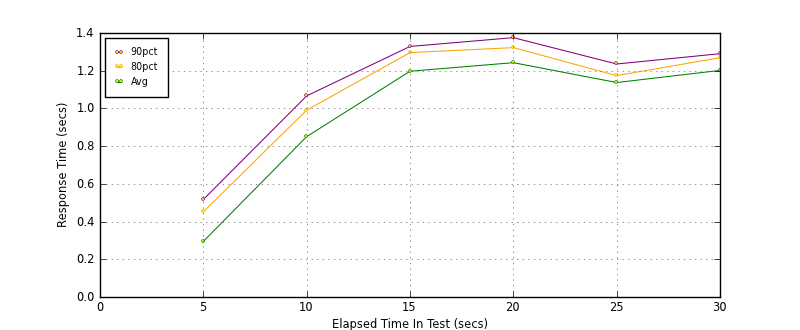
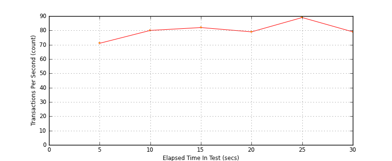
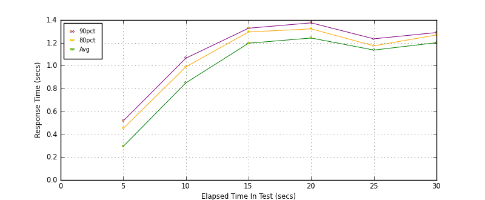
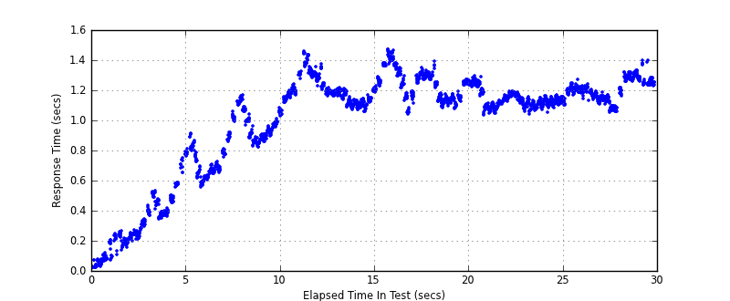

Performance Results Report
Summary
transactions: 2513
errors: 0
run time: 30 secs
rampup: 10 secs
test start: 2014-02-01 23:32:57
test finish: 2014-02-01 23:33:27
time-series interval: 5 secs
workload configuration:
| group name | threads | script name |
|---|
| user_group-1 | 100 | read_user.py |
All Transactions
Transaction Response Summary (secs)
| count | min | avg | 80pct | 90pct | 95pct | max | stdev |
|---|
| 2513 | 0.020 | 1.003 | 1.241 | 1.295 | 1.334 | 1.472 | 0.342 |
Interval Details (secs)
| interval | count | rate | min | avg | 80pct | 90pct | 95pct | max | stdev |
|---|
| 1 | 357 | 71.40 | 0.020 | 0.295 | 0.452 | 0.517 | 0.577 | 0.790 | 0.172 |
| 2 | 402 | 80.40 | 0.555 | 0.850 | 0.991 | 1.067 | 1.110 | 1.168 | 0.156 |
| 3 | 410 | 82.00 | 1.026 | 1.197 | 1.296 | 1.329 | 1.371 | 1.460 | 0.091 |
| 4 | 399 | 79.80 | 1.042 | 1.243 | 1.323 | 1.375 | 1.418 | 1.472 | 0.100 |
| 5 | 448 | 89.60 | 1.032 | 1.137 | 1.174 | 1.236 | 1.248 | 1.293 | 0.055 |
| 6 | 397 | 79.40 | 1.051 | 1.202 | 1.269 | 1.290 | 1.313 | 1.399 | 0.071 |
Graphs
Response Time: 5 sec time-series

Response Time: raw data (all points)

Throughput: 5 sec time-series

Custom Timer: get_tweets
Timer Summary (secs)
| count | min | avg | 80pct | 90pct | 95pct | max | stdev |
|---|
| 2413 | 0.020 | 1.003 | 1.241 | 1.295 | 1.334 | 1.472 | 0.342 |
Interval Details (secs)
| interval | count | rate | min | avg | 80pct | 90pct | 95pct | max | stdev |
|---|
| 1 | 357 | 71.40 | 0.020 | 0.294 | 0.451 | 0.517 | 0.577 | 0.790 | 0.172 |
| 2 | 402 | 80.40 | 0.555 | 0.850 | 0.991 | 1.066 | 1.110 | 1.168 | 0.156 |
| 3 | 410 | 82.00 | 1.026 | 1.197 | 1.295 | 1.328 | 1.371 | 1.460 | 0.091 |
| 4 | 399 | 79.80 | 1.042 | 1.242 | 1.322 | 1.375 | 1.418 | 1.472 | 0.100 |
| 5 | 448 | 89.60 | 1.032 | 1.137 | 1.174 | 1.235 | 1.248 | 1.293 | 0.055 |
| 6 | 397 | 79.40 | 1.051 | 1.201 | 1.269 | 1.290 | 1.312 | 1.398 | 0.071 |
Graphs
Response Time: 5 sec time-series

Response Time: raw data (all points)

Throughput: 5 sec time-series